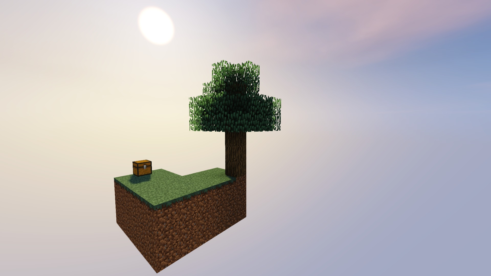

¿Qué es Skyblock? |
|
Skyblock es una modalidad de juego de Minecraft de tipo supervivencia pero con un mapa fuera de lo habitual. El mapa inicia en una isla flotante, desde la que cumpliras una serie de tareas para hacer valer tus habilidades en el juego. Principalmente es un juego para un solo jugador aunque hay variantes que permiten juego cooperativo o incluso combates PVP (Player versus player) entre islas. |  |
Se empieza en una isla con el minimo de recursos necesarios para sobrevivir. Este modo de juego requiere un conocimiento profundo de las mecánicas de Minecraft así como un cuidado extremo por los recursos que se poseen. Debes aprovechar de la forma más eficaz los bloques que te dan para avanzar en el juego y sobrevivir. Los objetivos del juego suelen ser unos autoimpuestos por el jugador o por el mapa en cuestión.
1. Construir un generador de adoquín
2. Construir una casa
3. Ampliar la casa
4. Hacer una granja de melones
5. Hacer una granja de calabazas
6. Hacer una granja de caña de azúcar
7. Hacer una granja de trigo
8. Hacer un hongo gigante rojo
9. Hacer una cama
10. Hacer 64 ladrillos de piedra
11. Hacer 20 antorchas
12. Hacer una fuente de agua infinita
13. Hacer un horno
14. Hacer un pequeño lago
15. Construir una plataforma a 24 cubos de la isla para
16. Hacer tinte verde con 10 cactus
17. Hacer 10 sopas de setas
18. Hacer 10 linternas de calabaza
19. Hacer 10 librerias
20. Hacer 10 panes
21. Recoger 10 perlas de ender
22. Cocinar 10 peces
23. Hacer 10 lanas negras
24. Hacer 10 lanas grises
25. Hacer 10 lanas gris claro
26. Hacer 10 lanas verde lima
27. Hacer 10 lanas rojas
28. Hacer 10 lanas amarillas
29. Hacer 10 lanas rosadas
30. Hacer 10 lanas verdes
31. Hacer 10 lanas naranjas
32. Hacer 10 golems de nieve
33. Hacer 20 cuadros (pinturas)
34. Construir y encender un portal al nether
35. Obten 5 lingotes de oro
36. Hacer 16 paneles de cristal
37. Recoger 50 troncos de abedul
38. Recoger 64 flechas y hacer un arco
39. Hacer 10 botones de piedra
40. Hacer 30 losas de piedra
41. Hacer 10 carteles
42. Hacer 20 escaleras
43. Hacer 20 vallas
44. Hacer 20 puertas de valla
45. Hacer 10 palancas
46. Hacer 10 trampillas
47. Hacer 10 placas de presión de piedra
48. Hacer 10 placas de presión de madera
49. Recoger 64 de polvo de hueso
50. Hacer 20 escaleras de piedra
Esta página fue hecha por Ramón Cupil Gabriel 6°I
estudiante del Colegio de Bachilleres de Chiapas Plantel 01
para la materia de Diseño digital y páginas web
impartida por el docente Francisco J. Ruiz Cruz
Email de contacto: gabriel.ramon.32@gmail.com